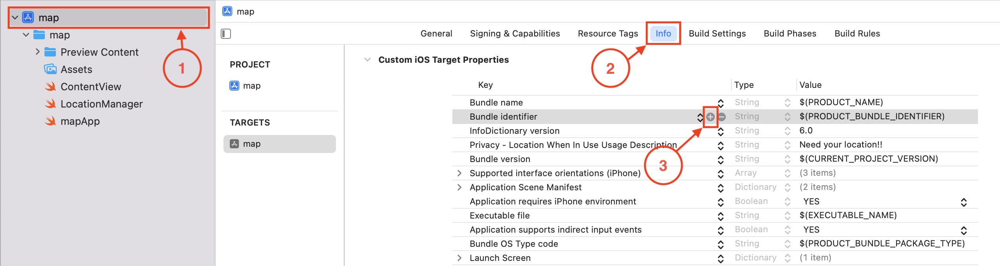

MapKit est un framework développé par Apple qui permet d’intégrer des cartes interactives dans les applications iOS. Il repose sur le service de cartographie d’Apple, offrant des fonctionnalités similaires à celles de Google Maps. MapKit fournit des classes pour afficher des cartes, ajouter des annotations, tracer des itinéraires, et bien plus. Il est facile à utiliser et offre de nombreuses options pour personnaliser l’apparence et le comportement des cartes.
Pour intégrer une carte interactive dans votre application SwiftUI, commencez par importer le framework MapKit, qui fournit les classes nécessaires pour travailler avec des cartes.
import MapKitLa vue Map de SwiftUI permet d’afficher une carte interactive dans votre interface :
struct ContentView: View {
var body: some View {
Map()
}
}• Map() : Crée une carte interactive.
MapKit offre de nombreuses options pour personnaliser l’apparence des cartes, notamment le style, les contrôles, les marqueurs, les annotations, etc.
La position de la caméra permet de définir la région affichée sur la carte :
struct ContentView: View {
let cameraPosition: MapCameraPosition = .region(.init(center: .init(latitude: 45.439857, longitude: -75.627043), latitudinalMeters: 400, longitudinalMeters: 400))
var body: some View {
Map(initialPosition: cameraPosition)
}
}Le modificateur .mapStyle(_:) permet de choisir le style de la carte :
struct ContentView: View {
var body: some View {
Map()
.mapStyle(.satellite)
}Les contrôles de carte permettent d’ajouter des éléments interactifs à la carte :
struct ContentView: View {
var body: some View {
Map()
.mapStyle(.hybrid)
.mapControls {
MapUserLocationButton()
MapCompass()
MapPitchToggle()
MapScaleView()
}
}
}Les marqueurs sont des points d’intérêt affichés sur la carte :
struct ContentView: View {
var body: some View {
Map {
Marker("La Cite", coordinate: CLLocationCoordinate2D(latitude: 45.439857, longitude: -75.627043))
}
}
}Les annotations sont des vues personnalisées que l’on peut afficher sur la carte :
struct ContentView: View {
var body: some View {
Map {
Annotation("La Cite", coordinate: CLLocationCoordinate2D(latitude: 45.439857, longitude: -75.627043), anchor: .center) {
Image(systemName: "graduationcap.fill")
.resizable()
.aspectRatio(contentMode: .fit)
.foregroundStyle(.white)
.frame(width: 20, height: 20)
.padding(7)
.background(.pink.gradient, in: .circle)
}
}
}
}MapKit permet d’accéder à la position de l’utilisateur en utilisant le gestionnaire de localisation (CLLocationManager).
Il est nécessaire d’ajouter la clé NSLocationWhenInUseUsageDescription dans le fichier Info.plist pour demander l’autorisation d’utiliser la localisation :
Le gestionnaire de localisation permet de suivre la position de l’utilisateur :
import MapKit
class LocationManager: NSObject, ObservableObject, CLLocationManagerDelegate {
private let locationManager = CLLocationManager()
@Published var currentLocation: CLLocationCoordinate2D? // Localisation actuelle
override init() {
super.init()
locationManager.delegate = self
locationManager.desiredAccuracy = kCLLocationAccuracyBest
locationManager.requestWhenInUseAuthorization()
locationManager.startUpdatingLocation()
}
func locationManager(_ manager: CLLocationManager, didUpdateLocations locations: [CLLocation]) {
currentLocation = locations.last?.coordinate
}
}struct ContentView: View {
@StateObject private var locationManager = LocationManager()
@State private var position: MapCameraPosition = .userLocation(fallback: .automatic)
var body: some View {
Map(position: $position) {
UserAnnotation()
}
}
}Lorsque l'utilisateur utilisera l'application pour la première fois un message lui sera afficher lui demandant d'autoriser la localisation
MapKit propose des services de recherche pour trouver des lieux, des adresses, des points d’intérêt, etc. Ces services sont fournis par le framework MapKit, qui offre des classes pour effectuer des recherches et afficher les résultats sur une carte.
La classe MKLocalSearch permet d’effectuer des recherches locales :
private func search() async {
guard !query.isEmpty, let region = visibleRegion else {
isSearching = false
return
}
do {
let results = try await performSearch(searchTerm: query, visibleRegion: region)
DispatchQueue.main.async {
self.mapItems = results
self.isSearching = false
}
} catch {
DispatchQueue.main.async {
self.mapItems = []
self.isSearching = false
}
print("Erreur de recherche : \(error.localizedDescription)")
}
}
private func performSearch(searchTerm: String, visibleRegion: MKCoordinateRegion) async throws -> [MKMapItem] {
let request = MKLocalSearch.Request()
request.naturalLanguageQuery = searchTerm
request.resultTypes = .pointOfInterest
request.region = visibleRegion
let search = MKLocalSearch(request: request)
let response = try await search.start()
return response.mapItems
}struct ContentView: View {
@State private var query: String = ""
@State private var isSearching: Bool = false
@State private var mapItems: [MKMapItem] = []
@State private var visibleRegion: MKCoordinateRegion?
var body: some View {
HStack(spacing: 10) {
TextField("Rechercher un service", text: $query)
.textFieldStyle(.roundedBorder)
Button("Search") {
isSearching = true
}
.buttonStyle(.bordered)
}
.padding(.horizontal)
Map {
ForEach(mapItems, id: \.self) { mapItem in
Marker(item: mapItem)
}
}
.onMapCameraChange { context in
visibleRegion = context.region
}
.task(id: isSearching) {
if isSearching {
await search()
}
}
List(mapItems, id: \.self) { mapItem in
VStack(alignment: .leading) {
Text(mapItem.name ?? "")
.font(.title3)
Text(mapItem.phoneNumber ?? "")
.frame(maxWidth: .infinity, alignment: .leading)
Text("\(mapItem.placemark.thoroughfare ?? "") \(mapItem.placemark.subThoroughfare ?? ""), \(mapItem.placemark.locality ?? ""), \(mapItem.placemark.administrativeArea ?? ""), \(mapItem.placemark.postalCode ?? ""), \(mapItem.placemark.country ?? "")")
.frame(maxWidth: .infinity, alignment: .leading)
}
}
}
private func search() async {
...
}
private func performSearch(searchTerm: String, visibleRegion: MKCoordinateRegion) async throws -> [MKMapItem] {
...
}
}MapKit permet de tracer des itinéraires entre deux points en utilisant le service de directions (MKDirections).
struct ContentView: View {
...
@State private var position: MapCameraPosition = .userLocation(fallback: .automatic)
@State private var route: MKRoute?
@StateObject private var locationManager = LocationManager()
@State private var selectedMapItem: MKMapItem?
private func calculateDirections(from: MKMapItem, to: MKMapItem) async -> MKRoute {
let directionsRequest = MKDirections.Request()
directionsRequest.transportType = .automobile
directionsRequest.source = from
directionsRequest.destination = to
let directions = MKDirections(request: directionsRequest)
let response = try! await directions.calculate()
return response.routes.first!
}
private func requestCalculateDirections() async {
route = nil
if let selectedMapItem {
guard let currentUserLocation = locationManager.currentLocation else {
return
}
let startingMapItem = MKMapItem(placemark: MKPlacemark(coordinate:
CLLocationCoordinate2D(
latitude: currentUserLocation.latitude,
longitude: currentUserLocation.longitude
)
))
self.route = await calculateDirections(from: startingMapItem, to: selectedMapItem)
}
}
var body: some View {
...
Map(position: $position, selection: $selectedMapItem) {
ForEach(mapItems, id: \.self) { mapItem in
Marker(item: mapItem)
}
if let route {
MapPolyline(route)
.stroke(.blue, lineWidth: 5)
}
UserAnnotation()
}
.onMapCameraChange { ... }
.task(id: isSearching) { ... }
.task(id: selectedMapItem) {
if let selectedMapItem {
await requestCalculateDirections()
}
}
}
private func search() async { ... }
private func performSearch(searchTerm: String, visibleRegion: MKCoordinateRegion) async throws -> [MKMapItem] { ... }
}A la base l'emulateur n'a pas de gps d'integrer mais il est tout de meme posible de simuler une position. Pour cela, il faut sélectionner une position dans le menu Features > Location :
Le géocodage est le processus de conversion d’une adresse (ex. : « 10 rue de Rivoli, Paris ») en coordonnées géographiques (latitude et longitude). Inversement, le géocodage inverse transforme des coordonnées (ex. : 48.8566, 2.3522) en adresse ou nom de lieu.
Pour effectuer ces opérations, nous utilisons la classe CLGeocoder fournie par le framework CoreLocation. Elle propose deux méthodes principales :
import CoreLocationCi-dessous, une vue SwiftUI nommée GeocodingView qui illustre pas à pas comment :
import SwiftUI
import CoreLocation
struct GeocodingView: View {
// État pour stocker l'adresse saisie
@State private var address: String = ""
// État pour stocker les champs latitude et longitude
@State private var latitude: String = ""
@State private var longitude: String = ""
// Résultats à afficher
@State private var geocodedCoordinates: String = "Coordonnées : -"
@State private var reverseGeocodedAddress: String = "Adresse : -"
// Géocodeur de CoreLocation
let geocoder = CLGeocoder()
var body: some View {
NavigationView {
VStack(spacing: 20) {
// Section 1 : Géocodage (Adresse -> Coordonnées)
VStack {
TextField("Entrez une adresse", text: $address)
.textFieldStyle(RoundedBorderTextFieldStyle())
.padding()
Button("Obtenir les coordonnées") {
geocodeAddress()
}
.buttonStyle(.borderedProminent)
Text(geocodedCoordinates)
.foregroundColor(.blue)
}
.padding()
.background(Color(.systemGray6))
.cornerRadius(10)
// Section 2 : Géocodage inverse (Coordonnées -> Adresse)
VStack {
TextField("Latitude", text: $latitude)
.textFieldStyle(RoundedBorderTextFieldStyle())
.keyboardType(.decimalPad)
TextField("Longitude", text: $longitude)
.textFieldStyle(RoundedBorderTextFieldStyle())
.keyboardType(.decimalPad)
Button("Obtenir l'adresse") {
reverseGeocodeCoordinates()
}
.buttonStyle(.borderedProminent)
Text(reverseGeocodedAddress)
.foregroundColor(.blue)
}
.padding()
.background(Color(.systemGray6))
.cornerRadius(10)
Spacer()
}
.padding()
.navigationTitle("Géocodage")
}
}
// MARK: - Étape 1 : Géocodage (Adresse -> Coordonnées)
func geocodeAddress() {
// Vérifie que le champ 'address' n'est pas vide
guard !address.isEmpty else {
geocodedCoordinates = "Veuillez saisir une adresse"
return
}
geocoder.geocodeAddressString(address) { (placemarks, error) in
if let error = error {
geocodedCoordinates = "Erreur : \(error.localizedDescription)"
} else if let location = placemarks?.first?.location {
let lat = location.coordinate.latitude
let lon = location.coordinate.longitude
geocodedCoordinates = "Coordonnées : \(lat), \(lon)"
} else {
geocodedCoordinates = "Aucune correspondance trouvée"
}
}
}
// MARK: - Étape 2 : Géocodage inverse (Coordonnées -> Adresse)
func reverseGeocodeCoordinates() {
// Convertit les champs latitude et longitude en Double
guard let lat = Double(latitude), let lon = Double(longitude) else {
reverseGeocodedAddress = "Coordonnées invalides"
return
}
let location = CLLocation(latitude: lat, longitude: lon)
geocoder.reverseGeocodeLocation(location) { (placemarks, error) in
if let error = error {
reverseGeocodedAddress = "Erreur : \(error.localizedDescription)"
} else if let placemark = placemarks?.first {
// Compose une adresse lisible
let name = placemark.name ?? ""
let locality = placemark.locality ?? ""
let country = placemark.country ?? ""
reverseGeocodedAddress = "Adresse : \(name), \(locality), \(country)"
} else {
reverseGeocodedAddress = "Aucune adresse trouvée"
}
}
}
}